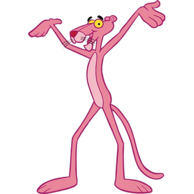

La Pantera Rosa
Uno de los personajes más famosos de la década del 2000
Por Martín Roccasalva
La pantera rosa es el nombre de un personaje de ficción, ligado a la película de igual título, de 1963 de Blake Edwards, ese título aludía a un diamante de color rosa.
En la película, la pantera rosa era, en realidad, un diamante de mucho valor y, por extensión, un ladrón de guante blanco que había logrado robarlo.
En esa primera película se recurrió a una animación para ilustrar el título y los créditos iniciales y finales de la película. Blake Edwards encargó al animador Friz Freleng que crease un dibujo animado de una pantera, y solo le pidió tres cosas: que fuera graciosa, muda y de color rosa.
Luego de la serie original hubieron varias secuelas y películas del personaje, algunas de ellas fueron La Pantera Rosa y sus Hijos (1984). El nuevo show de la Pantera Rosa (1993). La Pantera Rosa y sus amigos (2010). Una navidad muy rosada (2011).
No pensamos que la serie fuese a tener tanto éxito.
Friz Freleng
No pensamos que la serie fuese a tener tanto éxito.
Friz Freleng
LOS
PERSONAJES
La Pantera Rosa puede ser definida como un gentleman británico: elegante hasta en el último de sus gestos. Es un felino antropomórfico, de aspecto físico delgado, con la particularidad de ser de color rosa y aparentemente mudo. Es un personaje bastante metódico, con una capacidad intelectual muy elevada y de genio bastante alegre y muy simpático.
Por lo general, se mete en algún lío o simplemente realiza tareas bastante comunes, pero con un toque cómico singular, lo cual haría recordar por un momento un singular pero poco denotado parecido muy especial al gran maestro de la cinematografía sir Charles Chaplin y al personaje Charlot.
En la serie original solo habían dos personajes, la pantera y el inspector, pero en las series posteriores a ésta aparecen también la Sra. Pantera (su madre), Pinky y Panky (sus dos hijos) y otros amigos.
LA
MÚSICA
Uno de los elementos más identificables de la Pantera Rosa es la música del título y sus créditos, compuesta por Henry Mancini para la película original, y desarrollada con diversas variaciones en el resto de las series y películas.
Se trata de un tema de jazz, con el saxo tenor como principal elemento instrumental. A partir de The return of the Pink Panther, 1965, el intérprete solista de este tema fue el saxofonista británico, Tony Coe.